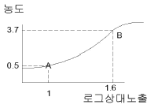
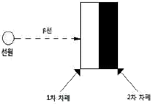
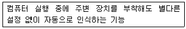

방사선비파괴검사기사(구) (2011-10-02 기출문제)
1과목: 방사선투과시험원리
1. Bunsen-Roscoe의 상호법칙에 의한 광화학 반응에 관한 설명으로 옳은 것은?
- 사진농도는 스크린에 조사된 방사선 노출량에 반비례한다.
- 사진농도는 금속스크린에서 방출된 2차전자의 발생효율과는 무관하다.
- 사진농도는 필름에 조사된 방사선 강도와 노출시간의 곱에 좌우된다.
- 사진농도는 형광스크린에서 발광한 빛의 강도와 노출시간의 곱에 비례한다.
(정답률: 알수없음)

2. 방사선 체외피폭의 주요 방지대책으로 옳지 않은 것은?
- 피폭시간을 최소로 한다.
- 선원과 인체 사이에 차폐물을 설치한다.
- 선원과 인체 사이의 거리를 최대한 멀리 한다.
- 선원과 인체의 거리를 가능한 한 짧게 하여 작업시간을 줄인다.
(정답률: 알수없음)
3. X선관 내에 관전압 200kVp 이고, 표적재료로 텅스텐을 쓰고 있다면 X선 발생효율은 얼마인가?
- 0.74%
- 1.48%
- 3.7%
- 74%
(정답률: 알수없음)
4. 1Ci 강도의 Ra-226은 400년이 지난 후 약 몇 Ci의 강도로 되는가? (단, 방사선동위원소 Ra-226의 반감기는 1600년이다.)
- 0.5Ci
- 0.7Ci
- 0.75Ci
- 0.84Ci
(정답률: 알수없음)
5. 방사선 투과검사에서 상질지시계(IQI, image quality indicator)를 사용하는 주된 목적은?
- 결함의 크기 측정
- 필름의 명암도 측정
- 필름의 콘트라스트 측정
- 검사기법의 적정성 점검
(정답률: 알수없음)
6. 다음 중 노출도표에 반드시 명시되어야 할 사항이 아닌 것은?
- 현상 작업의 조건
- 선원과 필름과의 거리
- 사용한 장비의 명칭
- 선원 또는 초점의 크기
(정답률: 알수없음)
7. 비파괴시험의 목적이 아닌 것은?
- 제조원가의 절감
- 신뢰성의 향상
- 제조기술의 개량
- 금속재료의 조직
(정답률: 알수없음)
8. 기체에 방사선이 닿으면 전기적으로 중성이었던 기체의 원자 또는 분자가 이온으로 분리되는 작용은?
- 형광작용
- 사진작용
- 전리작용
- 기상적용
(정답률: 알수없음)
9. X선투과시험과 비교한 γ선투과시험의 장점에 대한 설명으로 틀린 것은?
- 운반하기 쉽고, 협소한 장소에 접근하기 쉽다.
- 동일한 에너지 범위일 경우 X선 장비보다 가격이 저렴하다.
- γ선은 동위원소의 핵에서 방출되는 전자파이므로 외부전원이 필요치 않다.
- 에너지가 높으므로 두꺼운 검사체에 사용할 수 있고, 선명한 투과사진을 얻을 수 있다.
(정답률: 알수없음)
10. 와전류탐상시험이 가능하지 않은 대상물은?
- 고무 막대
- 강철 막대
- 구리 막대
- 알루미늄 막대
(정답률: 알수없음)
11. 전원의 공급이 없어도 검사가 가능한 비파괴 검사법은?
- 엑스선투과검사, 사각법 초음파탐상검사
- 극간식 자분탐상검사, 관통형 와전류탐상검사
- 용제제거성 염색침투탐상검사, 직접 육안검사
- 압력변화법 누설검사, 용제제거성 형광침투탐상검사
(정답률: 알수없음)
12. 누설검사를 실시하는 직접적인 이유로 보기에 가장 거리가 먼 것은?
- 제품의 생산성을 증대시키기 위해
- 돌발적인 누설에 기인하는 유해한 환경적 요소를 방지하기위해
- 표준에서 벗어난 누설률과 부적절한 제품을 검출하기 위해
- 시스템 작동에 방해되는 재료의 누설 손실을 방지하기 위해
(정답률: 알수없음)
13. 다음 중 관통된 누설검사를 적용할 수 있는 비파괴검사법은?
- 침투탐상검사
- 방사선투과검사
- 자분탐상검사
- 와류탐상검사
(정답률: 알수없음)
14. 초음파 탐상시험에 대한 설명 중 틀린 것은?
- 불감대가 존재하지 않는다.
- 투과능력이 탁월하다.
- 검사결과를 신속히 알 수 있다.
- 검사자 또는 주변인에 대한 장애가 없다.
(정답률: 알수없음)
15. 와전류탐상검사법의 특징을 설명한 것 중 틀린 것은?
- 도체에 적용된다.
- 음향탐상검사법이다.
- 시험체의 표면에 있는 결함검출을 대상으로 한다.
- 간단한 시험체의 자동화나 고속검사에 용이하다.
(정답률: 알수없음)
16. 다른 비파괴검사법과 비교한 침투탐상시험의 장점에 대한 설명으로 틀린 것은?
- 적용 방법이 비교적 간단하다.
- 모든 불연속의 검출이 가능하다.
- 불연속에 대한 평가가 비교적 쉽다.
- 원리가 비교적 간단하고 이해하기 쉽다.
(정답률: 알수없음)
17. 구조물의 표면 주응력을 구하기 위해 3축 변형을 측정하여야 한다. 이를 위해 2방향 이상의 변형을 동시에 측정하는 데 주로 사용되는 게이지는?
- 단축 게이지
- 크렉 게이지
- 로제트 게이지
- 방수 게이지
(정답률: 알수없음)
18. 초음파탐상시험 결과의 신뢰도 평가에서 결함검출확률(probability of detection; POD)에 영향을 미치는 인자가 아닌 것은?
- 대비시험편의 개수
- 결함의 크기와 방향성
- 시험 환경 및 검사자의 기량
- 검사시스템의 성능과 시험방법의 선택
(정답률: 알수없음)
19. 자분탐상검사에서 자분의 선택시 고려해야 할 사항을 설명한 것 중 틀린 것은?
- 건식용 자분은 폭이 비교적 넓은 것에 사용한다.
- 습식용 자분은 비교적 매끈한 표면의 미세한 결함의 탐상에 알맞다.
- 형광 자분은 비형광 자분보다도 자분모양을 식별하기 쉽지만 어둡게 할 수 있을 때만 사용한다.
- 형광 자분은 시험체 표면의 색과 대비에 상관없이 흰색으로만 자분 사용을 결정한다.
(정답률: 알수없음)
20. 시험체의 표면 근처에 불연속 또는 구조 변화가 있으면 온도구배에 의해 전압이 발생하며 이를 전위차계로 검사하는 방법으로서 불연속, 편석, 열전 특성을 측정할 수 있는 비파괴검사법은?
- 열적 검사법
- 화학분석 검사법
- 방사선투과 검사법
- 음파-초음파 검사법
(정답률: 알수없음)
2과목: 방사선투과검사
21. 다음 중 공업용 X선관의 크기를 결정하는 것은?
- X선관의 크기
- 집속컵의 크기
- 냉각물질의 재질
- X선관 창(Window)의 크기
(정답률: 알수없음)
22. 다음 중 방사선 투과시험에 의해 결함검출이나 판정이 가장 힘든 불연속부는?
- 기공(porosity)
- 라미네이션(lamination)
- 텅스텐 혼입(tungsten inclusion)
- 용입부족(incomplete penetration)
(정답률: 알수없음)
23. 감마선원으로부터 방출되는 방사선의 총량과 가장 밀접한 관계가 있는 것은?
- 선원의 밀도
- 선원의 강도
- 필름의 종류
- 시험체 두께
(정답률: 알수없음)
24. 방사선 투과검사에서 투과사진의 선명도(Sharpness)를 저하시키는 원인으로 볼 수 없는 것은?
- 상의 반음영(Penumbra)
- 상의 왜곡(Distortion)
- 상의 확대(Magnification)
- X선의 경사효과(Heel effect)
(정답률: 알수없음)
25. 주강품에서 발생되는 결함에 관한 설명으로 옳은 것은?
- 열간균열은 금속이 응고할 때, 결정립계가 대단히 약하고, 여기에 팽창에 의한 압축력이 가해지는 경우에 발생한다.
- 냉간균열은 냉각시의 내부응력에 의해 생기는 것으로 구상으로 나타나는 경우가 많다.
- 주형 내에서 용탕의 2개 흐름이 합류하여 그 경계가 완전히 용입되지 못하고 잔류한 것을 콜드셧이라 한다.
- 주형표면의 모래가 용탕의 흐름에 의해 완전히 박리되어 다른 곳으로 이동된 것을 버클(buckle)이라 한다.
(정답률: 알수없음)
26. 다음 중 선량당량을 나타내는 단위로 옳은 것은?
- C/kg
- Gy
- Sv
- rad
(정답률: 알수없음)
27. 전자 방사선투과검사법 중 전자투과법을 적용하기 적당한 재료는?
- 원자번호가 높은 재료
- 원자번호가 낮은 금속재료
- 얇고 흡수도가 낮은 비금속 재료
- 원자번호가 높고, 낮은 물질이 섞여 있는 재료
(정답률: 알수없음)
28. 방사선 투과사진의 상에서, 농도의 비균일성 (non-uniformity)에 대한 시각적 느낌(visual impression)으로 정의되는 필름의 특성은?
- 감도
- 명료도
- 입상성
- 콘트라스트
(정답률: 알수없음)
29. X선 발생장치의 취급시 안전상 주의하여야 할 사항으로 옳지 않은 것은?
- X선 발생기의 사용시 제어기는 고전압이 인가되므로 부주의로 커버를 벗기는 행위를 행서는 안 된다.
- 조리개와 필터는 조사범위를 알맞게 하기 위한 부품이므로 필요에 따라 개조하거나 탈착하여 사용하여야 한다.
- 인터록, 도어 스위치 등의 외부안전회로와 연동하여 사용하는 경우 정기적으로 인접회로의 작동여부를 확인하여야 한다.
- X선 조사 중에는 직접선 및 산란선을 충분히 방어하여야 하고 작업은 면허소지자 및 유자격자의 지시에 따라야 한다.
(정답률: 알수없음)
30. 형광투시검사(Fluoroscopy)에 관한 설명으로 옳지 않은 것은?
- 두꺼운 물체 또는 밀도가 높은 물체도 검사가 가능하다.
- 다량의 제품을 신속하게 내부 불연속부를 검사하는데 적합하다.
- 큰 결함을 즉시 불합격시켜 경비 절감의 효과를 얻을 수있다.
- 형광투시검사 감도(sensitivity)는 일반 방사선 투과검사의 경우보다 낮다.
(정답률: 알수없음)
31. 방사선 투과검사시 필요에 따라 연박증감지를 사용한다. 이때 사용되는 연박증감지의 증감작용에 주로 관계하는 것은?
- X선 흡수로 방출된 가시선
- X선 흡수로 방출된 광전자
- X선 흡수로 방출된 양전자
- X선 흡수로 방출된 산란 음극선
(정답률: 알수없음)
32. 방사선 투과사진의 현상처리작업에 있어 현상온도가 선형적으로 높아짐에 따른 현상시간의 변화를 바르게 표현한 것은?
- 현상온도가 높아지면 현상시간은 비례적으로 길어진다.
- 현상온도가 높아지면 현상시간은 지수함수적으로 길어진다.
- 현상온도가 높아지면 현상시간은 비례적으로 짧아진다.
- 현상온도가 높아지면 현상시간은 지수함수적으로 짧아진다.
(정답률: 알수없음)
33. 저에너지 γ선 선원에는 75Se, 169Yb, 170Tm 및 153Gd 등이 있다. 다음중 반감기가 짧은 것부터 긴 것으로 순서대로 나열된 것은?
- 75Se - 169Yb - 153Gd - 170Tm
- 153Gd - 170Tm - 169Yb - 75Se
- 169Yb - 75Se - 170Tm - 153Gd
- 170Tm - 75Se - 153Gd - 169Yb
(정답률: 알수없음)
34. 방사선 투과검사에 사용되는 연박스크린은 1차 방사선에 노출되면 필름의 사진작용을 일으키는 2차 방사선을 방출하게 된다. 다음 중 이러한 사진작용을 일으키는 사진작용을 일으키는 2차 방사선은 어느 것인가?
- α입자
- 양자
- 전자
- γ선
(정답률: 알수없음)
35. 방사선 투과검사에서 촬영배치시 선원과 투과도계간 거리(L1)는 투과도계와 필름간 거리(L2)에 의해 구제받는다. 만일 L1 = m × L2 이고 선원의 초점 크기를 F 라고 할 때 상질이 보통급의 경우 m = 2.5F 라면, 이 경우 최대 기하학적 불선명도는 얼마인가? (단, L1, L2, F 의 단위는 mm 이다.)
- 0.1mm
- 0.2mm
- 0.3mm
- 0.4mm
(정답률: 알수없음)
36. 감마선 조사장비에서 X선관의 후드(Hood) 및 창(Window)의 역할을 하는 것은?
- 콜리메터(Collimator)
- 가이드 튜브(Guide Tube)
- 드라이브 케이블(Drive Cable)
- 저장용기의 앞 연결부(Connector)
(정답률: 알수없음)
37. γ선 투과사진법과 중성자 투과사진법의 비교시 가장 뚜렷한 차이점은?
- 둘 다 선원은 같으나 필름의 감광기구가 다르다.
- γ선에서는 상질계가 필요하나 중성자에서는 필요 없다.
- γ선에서는 필름을 사용하나 중성자에서는 사용하지 않는다.
- γ선에서는 스크린이 없어도 되지만 중성자에서는 꼭 있어야 된다.
(정답률: 알수없음)
38. 선원과 투과도계간 거리 및 투과도계와 필름간 거리를 규제하는 주된 이유는 무엇인가?
- 기하학적 불선명도를 높이기 위하여
- 시험부의 유효폭을 조절하기 위하여
- 방사선의 조사방향을 시험부에 수직이 되도록 하기 위하여
- 상의 중심부와 주변의 농도차가 커지지 않도록 하기 위하여
(정답률: 알수없음)
39. 방사선 투과사진에서 결함 또는 투과도계의 존재를 확인 할수 있는지의 여부를 결정하는 것은?
- 필름 특성곡선
- 기하학적 보정계수
- 필름 콘트라스트
- 식별한계 콘트라스트
(정답률: 알수없음)
40. 그림과 같은 필름특성곡선에서 AB의 평균 필름콘트라스트는 약 얼마인가?

- 0.1
- 0.8
- 5.3
- 7.4
(정답률: 알수없음)
3과목: 방사선안전관리,관련규격및컴퓨터활용
41. ASME Sec.Ⅴ에 따라 Backing Strip이 있는 맞대기 용접 시험체를 방사선 투과시험 하고자 할 때 투과도계의 선택은 어떻게 하는가?
- 단지 모재 두께만 고려하여 선택한다.
- 모재 두께에 Backing Strip 두께만을 더해서 선택한다.
- 모재 두께와 용접덧살을 포함한 두께에 의해서 선택한다.
- 모재 두께, 용접덧살에 Backing Strip의 두께를 합해서 선택한다.
(정답률: 알수없음)
42. β선의 차폐를 효과적으로 하기 위하여 그림과 같이 중복차폐를 하는 것이 좋다. 다음 중 2차 차폐재료로 사용하기에 가장 부적당한 것은?

- Al
- Cu
- Fe
- Pb
(정답률: 알수없음)
43. 강 용접 이음부의 방사선 투과시험방법(KS B 0845)에서 규정하고 있는 강판 맞대기 용접 이음부에 대한 투과사진의 필요 조건에 관한 설명으로 옳은 것은?
- 모재의 두께가 4m 이하인 A급 상질의 경우 계조계는 10형을 쓴다.
- 상질의 종류가 A급인 경우 농도의 범위는 1.8이상 4.0 이하이다.
- 모재의 두께가 4m 이하인 A급 상질의 경우 투과도계의 식별 최소 선지름은 0.125mm 이다.
- 1회 촬영에서의 시험부 유효길이는 투과도계의 식별 최소선지름 이하만 만족하는 범위이면 된다.
(정답률: 알수없음)
44. 알루미늄 평판 접한 용접부의 방사선 투과시험방법(KS D 0242)에 의한 흠집 모양의 분류시 블로홀인 경우 4종류가 되는 경우는?
- 흠집모양이 5mm를 초과하는 경우
- 흠집모양이 8mm를 초과하는 경우
- 흡집모양이 모재 두께의 1/4를 초과할 경우
- 흡집모양이 모재 두께의 2/3를 초과할 경우
(정답률: 알수없음)
45. 강 용접 이음부의 방사선 투과시험방법(KS B 0845)에 따라 강판의 맞대기 용접 이음부에 대한 투과사진을 촬영할 때 방사선의 조사 방향은?
- 시험부의 투과 두께가 최소가 되는 방향
- 시험부의 투과 두께가 최대가 되는 방향
- 시험부의 투과 두께의 평균치가 되는 방향
- 시험부의 투과 두게 중 최소값의 1.2배 되는 방향
(정답률: 알수없음)
46. 보일러 및 압력용기에 대한 방사선 투과시험(ASME Sec.V, Art.2)에서 재료 두께 75mm 초과 100mm 이하인 경우에 허용되는 최대 기하학적 불선명도의 크기는?
- 0.3mm
- 0.5mm
- 1.0mm
- 1.8mm
(정답률: 알수없음)
47. 원자력법 시행령에서 규정하는 방사선의 종류에 해당되지않는 것은?
- X 선
- 중성자선
- 중양자선
- 40 keV 전자선
(정답률: 알수없음)
48. 원자력법 시행령에서 정한 방사선관리구역 수시출입자에 대한 수정체의 연간 등가선량한도로 옳은 것은?
- 12mSv
- 15mSv
- 30mSv
- 50mSv
(정답률: 알수없음)
49. 다음 중 두께가 5 cm 일 경우 방사선 투과검사에 사용되는 γ선에 대한 차폐효과가 가장 큰 물질은?
- 철(iron)
- 납(lead)
- 알루미늄(aluminum)
- 고강도 콘크리트
(정답률: 알수없음)
50. 방사선작업종사자의 손, 발 및 피부에 대한 연간 등가선량한도는 얼마인가?
- 15mSv
- 50mSv
- 150mSv
- 500mSv
(정답률: 알수없음)
51. 주강품의 방사선 투과시험방법(KS D 0227)에 의한 주강품의 방사선투과사진 등급분류에 관한 설명으로 옳은 것은?
- 수축 결함은 모두 6급으로 한다.
- 개재물의 경우 호칭 두께의 1/2 또는 15mm 이상의 크기는 6급이다.
- 모래 박힘의 경우 호칭 두께 또는 30mm를 초과하는 치수의 흠이 있는 경우 6급이다.
- 블로홀의 경우 호칭 두께의 1/3 도는 15mm를 초과하는 치수의 흠이 있는 경우 6급이다.
(정답률: 알수없음)
52. 공업용 방사선 투과검사에 사용되는 인공방사성동위원소 중 가용성 분말이기 때문에 누설에 특히 주의하여야 하는 방사성동위원소는?
- Co-60
- Ir-192
- Cs-137
- Tm-170
(정답률: 알수없음)
53. 교육과학기술부고시에 의하면 백혈병의 경우 인과확률이 33%, 고형암의 경우 인과확률이 50%를 초과하는 경우에는 이를 업무상 질병으로 인정하도록 규정하고 있다. 방사선 피폭으로 인한 피부암의 초과위험이 0.4%이고, 피부암의 기저위험이 0.8%라고 가정한다면 인과확률은 얼마인가?
- 6%
- 12%
- 33%
- 66%
(정답률: 알수없음)
54. 강 용접 이음부의 방사선 투과시험방법(KS B 0845)에서 상의 분류시 제 2종 결함인 경우 1류로 분류된 경우에도 2류로 하는 결함은 무엇인가?
- 블로홀
- 용입불량
- 언더컷
- 슬래그개입
(정답률: 알수없음)
55. 다음 중 외부 피폭선량을 측정하는 계기가 아닌 것은?
- Survey meter
- Pocket dosimeter
- Alarm dosimeter
- Wholebody counter
(정답률: 알수없음)
56. 우리나라 정부기관인 행정안전부(mopas)의 도메인 이름으로 옳은 것은?
- www.mopas.com
- www.mopas.go.kr
- www.mopas.co.kr
- www.mopas.pe.kr
(정답률: 알수없음)
57. 컴퓨터 보안에서 인터넷의 보안 문제로부터 특정 네트워크를 격리시키는데 사용되는 시스템은?
- 방화벽(Firewall)
- 해킹(Hacking)
- 인증(Authentication)
- 암호화(Encryption)
(정답률: 알수없음)
58. 다음이 설명하고 있는 Windows 운영체제의 기능은?

- S/W Setting
- H/W control
- Auto Run
- Plug and Play
(정답률: 알수없음)
59. 메타 검색엔진의 구성 요소가 아닌 것은?
- 웹 로봇
- 색인 데이터베이스
- 질의 서버
- 라우터
(정답률: 알수없음)
60. 컴퓨터의 입력장치로 옳지 않은 것은?
- 디지털카메라
- 디지타이저
- 조이스틱
- 플로터
(정답률: 알수없음)
4과목: 금속재료학
61. 고속도 공구강의 대표적인 것으로 SKH2가 있으며 이에 대한 표준 조성으로 옳은 것은?
- 18%W-4%Cr-1%V
- 18%Cr-4%W-1%V
- 18%V-4%Cr-1%W
- 18%W-4%V-1%Cr
(정답률: 알수없음)
62. 시효처리에 대한 설명으로 틀린 것은?
- 과포화 고용체를 이용한 제 2상의 석출과정이다.
- 온도가 높거나 시간이 길면 복원현상이 나타난다.
- 시효처리는 온도의 증가에 따른 취성증대가 목표이다.
- Al-Cu 합금의 석출과정은 과포화고용체→G.P대→중간상→안정상 순이다.
(정답률: 알수없음)
63. 다음 중 수소저장 합금에 대한 설명으로 틀린 것은?
- 수소저장에 의해 미세한 금속 분말을 제조할 수 있다.
- 수소가 방출하면 금속 수소화물은 원래의 수소저장 합금으로 되돌아온다.
- 수소저장 합금은 수소를 흡수 저장할 때 수축하고, 방출할 때는 팽창한다.
- 수소 가스가 금속 표면에 흡착되고 이것이 금속 내부로 침입 고용되어 저장된다.
(정답률: 알수없음)
64. 강의 열처리에서 탄화물 생성원소가 아닌 것은?
- W
- Mo
- Si
- Cr
(정답률: 알수없음)
65. 분말의 유동도에 대한 설명 중 틀린 것은?
- 분말의 유동도가 낮으면 제품의 생산성이 떨어진다.
- 분말의 유동도가 낮으면 제품의 특성이 불균일하다.
- 성형 다이의 설계시 반드시 유동도를 고려해야한다.
- 각진 형태의 제품보다는 둥근 형태의 제품에서 유동도가 중요시 된다.
(정답률: 알수없음)
66. 강의 담금질(quenching)시켜 경화 조직을 얻을 때 효과가 가장 큰 원소군은?
- B, Mn
- Cu, Sn
- P, Al
- Cr, Mg
(정답률: 알수없음)
67. 탄소강에서 인(P)에 의해 나타내는 취성은?
- 수소취성
- 고온취성
- 저온취성
- 적열취성
(정답률: 알수없음)
68. 다음 중 무산소구리(Cu)에 대한 설명으로 옳은 것은?
- 산소나 탈산제를 함유한 구리(Cu)를 말한다.
- 유리의 봉착성(封着性)이 좋으므로 진공관용 재료로서 유리에 봉입하는 동선으로 사용된다.
- 정련구리보다 기계적 성질은 우수하나 수소취성이 있어 가공성이 좋지 않다.
- 산소 중에 용해 주조하거나 목탄 및 CO가스에 의하여 탈산처리하지 않은 분위기 중에서 주조한다.
(정답률: 알수없음)
69. 쾌삭강을 만드는데 이용되는 대표 첨가원소가 아닌 것은?
- S
- Sn
- Pb
- Ca
(정답률: 알수없음)
70. 풀림(annealing) 과정에서 재결정 거동에 영향을 주지 않는 것은?
- 재결정 전의 변형량
- 초기 결정입 크기
- 화학적 조성
- 광학적 성질
(정답률: 알수없음)
71. 기지가 오스테나이트 조직으로 내마모성이 우수하여 각종 광산기계, 심한 충격과 마모를 받는 부품 등에 사용되는 강은?
- 고몰리브덴강
- 고망간강
- 망간-크롬강
- 니켈-크롬강
(정답률: 알수없음)
72. 황동의 자연균열에 대한 설명으로 틀린 것은?
- 일종의 잔류응력 균열이다.
- 암모니아 분위기에서 쉽게 일어난다.
- β 황동에는 Sn 이나 Si 첨가로 억제할 수 있다.
- 합금 중 Zn 이 용해되어 일어나는 균열이다.
(정답률: 알수없음)
73. 다음 중 Pb 이 포함된 베어링 합금이 아닌 것은?
- Kelmet
- White metal
- Bahn metal
- Monel metal
(정답률: 알수없음)
74. 시편의 전 표점거리 112mm, 지름 14mm, 최대하중 5500kg에서 시험편이 절단되었을 때 연신율이 17.9% 였다면 파단시 늘어난 표점길이는 몇 mm 인가?
- 122
- 132
- 142
- 152
(정답률: 알수없음)
75. 아연합금에 관한 설명 중 틀린 것은?
- 고순도 다이캐스팅 아연합금은 고온에서 입간부식을 일으킨다.
- 가공용 아연합금에는 Zn-Cu 계, Zn-Cu-Mn 계, Zn-Cu-Ti계 등이 있다.
- 금형용 아연합금은 다이캐스팅용보다 Al과 Cu를 증가시켜 강도 및 경도를 개선한 것이다.
- 다이캐스팅용 아연합금에서 알루미늄은 강도, 경도, 유동성을 개선한다.
(정답률: 알수없음)
76. 탄소강의 성질에서 탄소량의 증가에 따라 증가하는 것은?
- 비중
- 전기저항
- 열전도도
- 열팽창계수
(정답률: 알수없음)
77. 알루미늄(Al) 합금에 대한 설명 중 틀린 것은?
- Y 합금의 주요 성분은 Al-Cu-Ni-Mg 이다.
- 라우탈의 주요 조성은 Al-Cu-Si 계 합금이다.
- Al에 약 10%Mo을 첨가한 합금을 하이드로날륨이라 한다.
- Al-Si 합금계를 실루민이라 하며 개량처리하여 사용한다.
(정답률: 알수없음)
78. 주철에서 Ni의 영향을 설명한 것 중 틀린 것은?
- 흑연화를 돕는다.
- 탄화물 형성을 원활하게 하고 칠(chill)화에 효과적이다.
- 기지 조직에 고용되며 첨가함량의 증가에 따라 펄라이트→소르바이트→마텐자이트→오스테나이트 기지로 변화한다.
- Ni이 12~14% 이상 첨가된 오스테나이트기지의 주철은 산, 알칼리, 해수 등에 대한 내식성, 내산화성이 향상된다.
(정답률: 알수없음)
79. 순철이 Ac3에서 동소변태한 경우 이때의 격자상수는 어떻게 되는가?
- 커진다.
- 작아진다.
- 변화가 없다.
- 가열속도에 따라 변화한다.
(정답률: 알수없음)
80. 고융점 금속의 특성을 나타낸 것으로 틀린 것은?
- 증기압이 높다.
- 융점이 높으므로 고온강도가 크다.
- 고용융점 금속 중 W, Mo 은 열팽창계수가 낮다.
- 고용융점 금속 중 Ta, Nb 은 습식부식에 대한 내식성이 우수하다.
(정답률: 알수없음)
5과목: 용접일반
81. 내용적이 40L인 산소용기의 압력계 압력이 90기압 이었다면, 프랑스식 팁 300번으로는 몇 시간을 용접할 수 있는가? (단, 산소와 아세틸렌의 혼합비는 1:1 이다.)
- 6시간
- 9시간
- 12시간
- 18시간
(정답률: 알수없음)
82. 일반적으로 모재의 용접선 근처의 열영향부에서 발생하는 균열로 용착금속 속의 확산성 수소에 의해 발생하는 균열은?
- 설퍼 균열
- 비드 밑 균열
- 토우 균열
- 루트 균열
(정답률: 알수없음)
83. 납땜에 사용되는 용제의 구비조건 중 틀린 것은?
- 모재의 산화피막과 같은 불순물을 제거하고 유동성이 좋을 것
- 모재나 땜납에 대한 부식작용이 최대한 일 것
- 납땜 후 슬래그 제거가 용이할 것
- 청정한 금속면의 산화를 방지할 것
(정답률: 알수없음)
84. 인청동 모재의 TIG 용접에 관한 설명으로 틀린 것은?
- 직류 정극성을 주로 사용한다.
- 토륨 텅스텐 용접봉을 사용한다.
- 용접가스를 느리게 해야 한다.
- 보호가스로 아르곤 또는 아르곤+헬륨을 사용한다.
(정답률: 알수없음)
85. 프로젝션 용접의 돌기의 형상 및 크기가 갖추어야 할 조건에 대한 설명으로 가장 거리가 먼 것은?
- 돌기는 판 두께가 두꺼울수록 높이와 지름을 적게 한다.
- 돌기는 통전 전의 예압에 충분히 견디어야 한다.
- 돌기는 타출하기가 용이하여야 한다.
- 돌기의 재질이 충분하며, 상대판과의 사이에 열평형이 유지되어야 한다.
(정답률: 알수없음)
86. 이산화탄소 아크 용접에서 전진법과 후진법을 비교할 때 전진법의 장점으로 가장 적당한 것은?
- 용접선이 잘 보여 운봉을 정확하게 할 수 있다.
- 스패터의 발생이 적으며 진행 반대방향으로 흩어진다.
- 용착금속이 아크보다 뒤지므로 깊은 용입을 얻을 수 있다.
- 비드 높이가 높고 폭이 좁은 비드를 얻을 수 있다.
(정답률: 알수없음)
87. 전기저항 점(spot) 용접의 전극(electrode)의 재질에 대한 설명으로 틀린 것은?
- 전기 전도도가 높을 것
- 열전도율이 낮을 것
- 계속사용 시 내구성이 좋을 것
- 고온에서도 기계적 성질이 유지될 것
(정답률: 알수없음)
88. 다음 중 두께가 1.6mm인 연강 판으로 기름보일러의 물탱크를 제작할 때 가장 적합한 용접은?
- 퍼커션 용접(percussion welding)
- 업셋 용접(upset welding)
- 심 용접(seam welding)
- 점 용접(spot welding)
(정답률: 알수없음)
89. 피복 아크 용접에서 자기쏠림(magnetic blow)의 방지 대책이 아닌 것은?
- 교류 용접기를 사용한다.
- 접지를 용접부로부터 멀리한다.
- 후퇴용접법(back step welding)으로 용착한다.
- 일반적으로 긴 아크를 사용한다.
(정답률: 알수없음)
90. 프로판 가스의 성질 및 용도에 대한 설명으로 틀린 것은?
- 쉽게 기화하며 발열량이 높다.
- 온도변화에 따른 팽창률이 크고 물에 잘 녹는다.
- 가정에서 취사용 연료로 많이 사용된다.
- 상온에서는 기체 상태이고 무색, 투명하다.
(정답률: 알수없음)
91. 아크용접기의 정격 2차전류가 400A이고 정격사용율이 40%이면 300A로 용접전류를 사용하여 용접할 경우 이 용접기의 허용사용율은 약 몇 %인가?
- 71%
- 80%
- 88%
- 91%
(정답률: 알수없음)
92. 맞대기 용접을 할 때 모재의 영향을 방지하기 위하여 홈 표면에 다른 종류의 금속을 표면 피복 용접하는 것을 의미하는 용접용어는?
- 버터링(buttering)
- 심 용접(seam welding)
- 앤드 탭(end tap)
- 덧살(flash)
(정답률: 알수없음)
93. 일반적인 용접작업의 순서를 나열한 것으로 가장 적합한 것은?
- 절단 및 가공 → 용접부 청소 → 검사 및 판정 → 본용접→ 가접
- 절단 및 가공 → 용접부 청소 → 검사 및 판정 → 가접 →본용접
- 절단 및 가공 → 용접부 청소 → 본용접 → 가접 → 검사 및 판정
- 절단 및 가공 → 용접부 청소 →가접 본용접 → 검사 및 판정
(정답률: 알수없음)
94. 일렉트로 가스 아크용접의 특징으로 틀린 것은?
- 정확한 조립이 요구되며 이동용 냉각 동판에 급수장치가 필요하다.
- 판 두께가 두꺼울수록 경제적이다.
- 용접장치가 간단하며 고도의 숙련을 요하지 않는다.
- 판 두께에 따라 단층으로 하진용접을 한다.
(정답률: 알수없음)
95. 심용접 중 모재를 맞대어 놓고 이음부에 같은 종류의 얇은 판을 대고 가압하여 심 용접하는 방법은?
- 포일 심용접
- 메시 심용접
- 맞대기 심용접
- 퍼커션 심용접
(정답률: 알수없음)
96. 알루미늄, 마그네슘, 구리 및 구리합금, 스테인리스강의 절단에 주로 이용되는 절단법은?
- 산소 아크 절단(oxygen arc cutting)
- 탄소 아크 절단(carbon arc cutting)
- 티그(TIG) 절단(inert gas tungsten arc cutting)
- 아크 에어 가우징(arc air gouging)
(정답률: 알수없음)
97. 다음 중 MIG 용접의 특징 설명으로 틀린 것은?
- 후판 용접에 적합하다.
- 소모식 전극봉을 사용한다.
- 용제를 사용하기 때문에 슬래그가 발생된다.
- 수동 피복 아크 용접에 비해 용착효율이 높아 고능률적이다.
(정답률: 알수없음)
98. 용해 아세틸렌을 충전하였을 때 용기 전체의 무게가 64.5kgf 이었는데, 다 쓰고 난 후 빈 용기를 달아 보았더니 59.5kgf 이었다. 다 소비한 아세틸렌가스의 양은 몇 L 인가? (단, 15℃, 1kgf/cm2 하에서의 아세틸렌가스의 용적은 9⑤L 임)
- 3480
- 3500
- 3520
- 4525
(정답률: 알수없음)
99. 비드 밑 균열의 비파괴 검사방법으로 가장 적합한 것은?
- 외관 검사
- 초음파 탐상시험
- 누설검사
- 자분 탐상시험
(정답률: 알수없음)
100. 다음 중 점화제의 화학반응을 이용하여 접합하는 용접은?
- 플라스마 아크 용접
- 전자빔 용접
- 피복 아크 용접
- 테르밋 용접
(정답률: 알수없음)